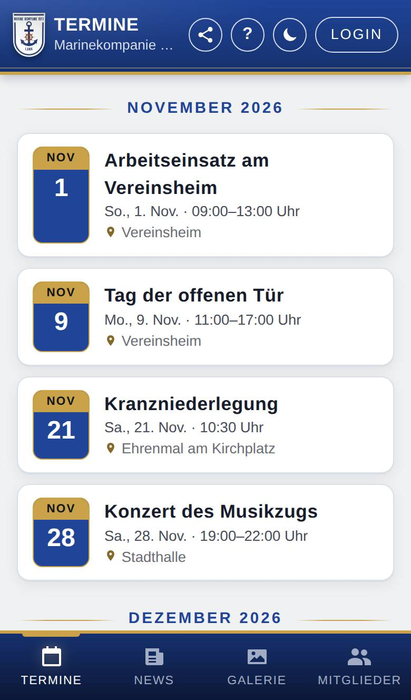
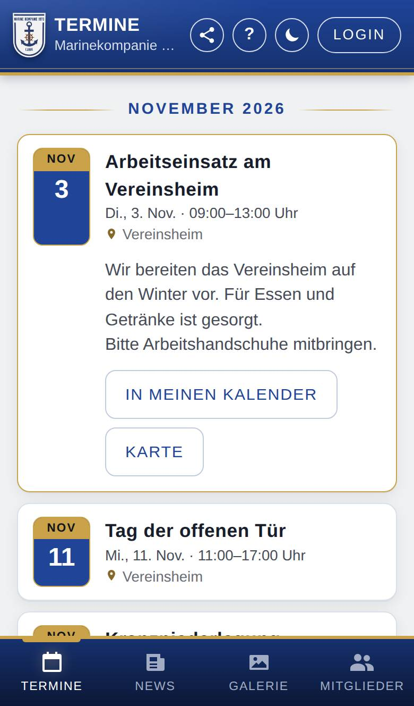

Termine
Nur, wenn Termine eingeschaltet ist.
Unter Termine siehst du die kommenden öffentlichen Termine der Marinekompanie Lank, nach Monaten geordnet. Diese Termine sieht jeder, auch ohne Anmeldung. Du kannst einen Termin in deinen eigenen Kalender übernehmen oder dich über neue Termine benachrichtigen lassen.

So öffnest du die Seite
Tippe unten auf Termine. Meist ist das auch die Startseite der App.
Bist du angemeldet und nutzt die Marinekompanie Lank zusätzlich ihren internen Kalender, siehst du hier stattdessen alle Termine aus diesem Kalender, auch die internen. Das beschreibt die Hilfeseite Termine mit Kalender, die du dann über ? erreichst.
Was du hier siehst
- Monatsüberschrift: z. B. „Oktober 2026“; darunter die Termine dieses Monats.
- Termin: links das Datum, rechts Titel, Wochentag und Uhrzeit und, falls angegeben, der Ort. Steht keine Uhrzeit dabei, dauert der Termin den ganzen Tag.
- Bei neuen Terminen benachrichtigen (unter der Liste, nur ohne Anmeldung): führt zu den Benachrichtigungen.
So gehst du vor
Einen Termin ansehen
- Tippe auf den Termin. Er klappt auf und zeigt die Beschreibung, falls es eine gibt.
- Tippe bei Bedarf auf einen der Knöpfe darunter (siehe unten).
- Tippe noch einmal auf den Termin, um ihn wieder zuzuklappen.

Die Knöpfe eines aufgeklappten Termins:
- In meinen Kalender: Die App lädt eine Kalenderdatei herunter. Öffne sie, und dein Handy oder Computer bietet an, den Termin in deinen eigenen Kalender zu übernehmen.
- Mehr Infos: öffnet eine Webseite zum Termin. Den Knopf gibt es nur, wenn beim Termin ein Link eingetragen ist.
- Karte: zeigt den Ort in der Karten-App: Auf Android wählst du die App aus (z. B. Google Maps oder Waze), auf iPhone und Mac öffnet sich Apple Karten, am PC Google Maps. Den Knopf gibt es nur, wenn ein Ort angegeben ist.
Über neue Termine benachrichtigt werden
- Tippe unter der Liste auf Bei neuen Terminen benachrichtigen.
- Wähle aus, worüber du benachrichtigt werden möchtest, und tippe auf Benachrichtigungen einschalten.
Bist du angemeldet, stellst du das unter Meins → Konto → Benachrichtigungen einstellen ein. Alles Weitere steht unter Benachrichtigungen.
Gut zu wissen
- Vergangene Termine verschwinden von selbst aus der Liste. Ein mehrtägiger Termin bleibt bis zu seinem letzten Tag stehen.
- Gibt es keine kommenden Termine, steht dort „Keine anstehenden Termine.“
- Die öffentlichen Termine trägt ein, wer bei der Marinekompanie Lank dafür zuständig ist. Fehlt ein Termin, wende dich an die Verantwortlichen.